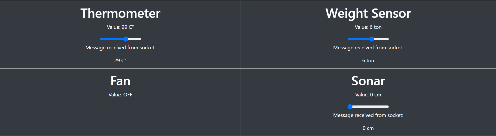

We decided first to implement the system part used for virtual devices.
This sprint aims to create a web application that allow to virtually modify the values of
all the devices except for the fan, that from requirement can only be modified by the system when the temperature
excedes a limit or by the manager.
Interface
The GUI interface must be simple and have all the information and components needed to read and modify the values of
the devices.
By analizing the requirement analisis we can get the different devices and how their values will be in order to have the best
html component that allow us to map those values.
From the requirement analysis it is underlined:
Thermometer
Value: floating point continuous value;
Range: for the temperature no range is specified;
Needs output: yes
Needs input: yes
Sonar
Value: integer continuous value;
Range: for the sonar power no range is specified;
Needs output: yes
Needs input: yes
WeightSensor
Value: floating point continuous value;
Range: for the weight limit no value is gives;
Needs output: yes
Needs input: yes
Fan
Value: boolean value;
Range: the fan can only be "ON" or "OFF";
Needs output: yes
Needs input: no
GUI components
We need components that is able to map the value of the devices.
We decided to go for a slider component instead of wrtiting the value in a textbox in order to simulate the costant increasing and decreasing of the information
read by the devices if they were not virtual.
Interaction
Websockets have been used to create a virtual environment where the devices are able to send/receive information to/from whoever is subscribed to the
websocket group.
From server side
Django allow us to create a python module to automatically handle websocket creation and management, to handle messages
we created one consumer for device. This class is the medium between the sender and the receivers. Each consumer handle messages
coming from on websocket group and manage to send it to the others connected to that websocket.
From view side
Javascript will handle the connection to the websocket and will send/receive the deta and update the relative view.
Each time a slider is moved the script relative to the slider will write in the websocket and each time a message is received the script reads it and updates the slider value and a text box with the correct value.
State
In order to maintain a consistent value during all the usages of the devices virtual environment we created a singleton class that keeps track of the
current value for the four devices. The consuemr will send the current value of the relative device to the websocket each time someone connect to it so who connects will be updated about the last changes.
The state is updated by the consumer each time a message is sent to the websocket.
Before the value is updated is parsed in order to read only the interested value that we decided to send with key "data".
Final Result

Testing
For testing we used Pytest a full-featured Python testing tool.
This test was build in order to verify using the virtual devuces the correct functioning of the QAKActors.
Four random value, chosed within the upper and lower bownd, are sent to a websocket and after few seconds a value is read
from the Coap actor and the two values are compared, if they are equal the test is passed, failed otherwise.
The file for testing comprehends one test for each
device (thermometer, weight sensor, sonar, fan), also we tested the scenario from requirement where the fan must turn on when the temperature exceeds the limit. We managed to do so by sending the minimum and the maximum temperature value
in order to turn on and off the fan for a couple of time.